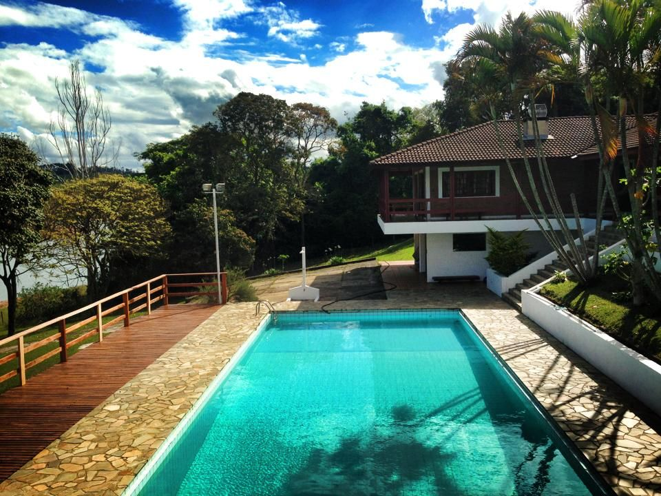

O melhor Sítio de Santa Isabel.
Do sonho à realidade. O Sítio Encanto foi construído com muita dedicação e atenção a cada detalhe. Há mais de 11 anos, o espaço foi adquirido já com o intuito em transformá-lo em um hotel fazenda. Desde então o projeto de crescimento e expansão não parou mais. Ano a ano, novas acomodações e áreas de lazer vêm sendo construídas, sempre com foco na qualidade. Hoje, a estrutura conta com chalés, restaurante, pesqueiro, piscinas e diversas opções de entretenimento e diversão em contato direto com a natureza, como passeio a cavalo. As instalações são modernas e confortáveis, consideradas como uma das melhores de toda região.